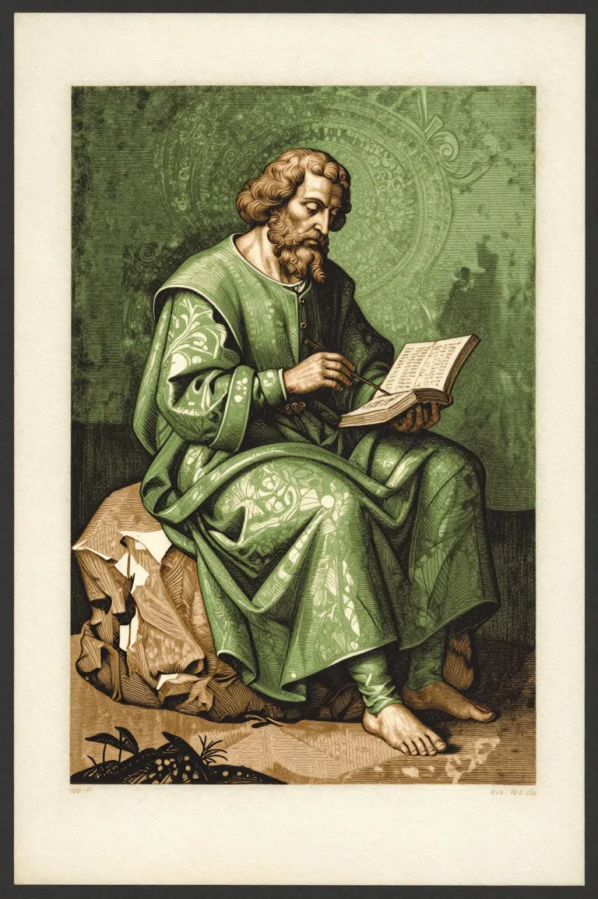

trykk · 1508–c.1620 · også: clair-obscur, xilografia a più legni (italiensk), Helldunkelholzschnitt (tysk)
En strekblokk bærer tegningen, og én til tre tonblokker trykkes over den i flate lavieringer i én fargetone. De flate trinnene fra papirhvitt til mørk bunn etterligner en pensel- og lavertegning med hvite høylys.

Kjerneidé
Flate tonblokker trykket i trinn over en strekblokk etterligner en pensel- og lavertegning med hvite høylys, uten skravering.
Designprinsipper
Skjær en nøkkelblokk for konturen og den dypeste skyggen, og trykk den i sort eller mørkebrunt.
Skjær én til tre tonblokker og trykk hver som en flat lavering i én fargetone på 20 til 60 % av nøkkelens tetthet.
Skjær høylysene ut av hver tonblokk, slik at det bare papiret viser som hvitt.
Hold hver tonekant hard; gå fra en lavering til den neste og ikke blend.
Trykk alle tonblokkene i én fargefamilie, slik at bildet leses som én tegning.
Tillat 0,5 til 1,5 mm forskyvning av nøkkelblokken mot tonblokkene.